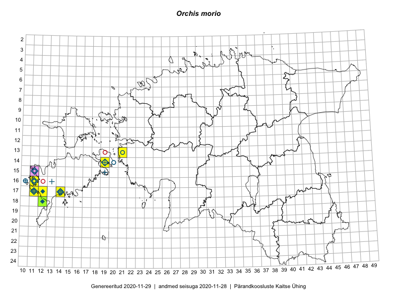

Orchis morio
Uuendatud: 2016-12-07
Kaardile koondatud taksonid: Orchis morio L.

Kaart põhineb 14 vaatlusel. Taime on leitud 3 ruudust.
| Ruut | Vaatleja(d) | Vaatlusaeg | Kirje tüüp | Viide andmebaasikirjele |
|---|---|---|---|---|
| 18-12 | Toomas Kukk, Thea Kull, Ott Luuk, Peedu Saar, Mari Reitalu | 2014-05-23 | punkt | vaata PlutoFis |
| 18-12 | Toomas Kukk, Thea Kull, Ott Luuk, Peedu Saar, Mari Reitalu | 2014-05-23 | punkt | vaata PlutoFis |
| 17-11 | Mari Reitalu, Triin Reitalu | 2015-05-08 | ruut/ala | vaata PlutoFis |
| 17-11 | Mari Reitalu, Triin Reitalu | 2015-05-08 | punkt | vaata PlutoFis |
| 17-11 | Mari Reitalu, Triin Reitalu | 2015-05-19 | ruut/ala | vaata PlutoFis |
| 16-11 | Sirje Azarov, Mari Reitalu | 2015-05-23 | ruut/ala | vaata PlutoFis |
| 16-11 | Sirje Azarov, Mari Reitalu | 2015-05-23 | punkt | vaata PlutoFis |
| 16-11 | Sirje Azarov, Mari Reitalu | 2015-05-23 | punkt | vaata PlutoFis |
| 16-11 | Sirje Azarov, Mari Reitalu | 2015-05-23 | punkt | vaata PlutoFis |
| 17-11 | Mari Reitalu, Triin Reitalu | 2015-06-24 | ruut/ala | vaata PlutoFis |
| 17-11 | Triin Reitalu, Mari Reitalu | 2015-05-19 | punkt | vaata PlutoFis |
| 17-11 | Peedu Saar, Toomas Kukk, Ott Luuk, Thea Kull, Mari Reitalu | 2014-06-28 | ruut/ala | vaata PlutoFis |
| 17-11 | Peedu Saar, Toomas Kukk, Mari Reitalu, Thea Kull, Ott Luuk | 2014-06-28 | punkt | vaata PlutoFis |
| 17-11 | Meeli Mesipuu, Tiiu Kull, Arto-Randel Servet | 2016-05-28 | punkt | vaata PlutoFis |